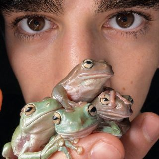

Our videos are insane to make. The people who make them are even more so. We’re hiring the most creative, innovative, and ambitious minds to dream bigger, build harder, and change the world.
Think you have what it takes? Let’s talk.
